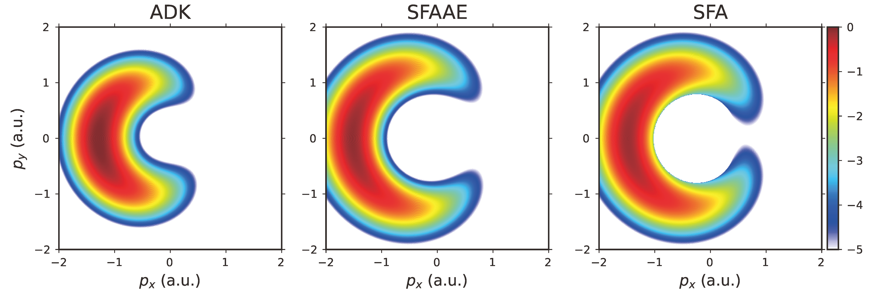

Example: Attoclock and Initial Condition Methods
With the aim of studying the influence of non-adiabatic effects on the attoclock signal, we employ ADK, SFA-AE and SFA to provide the initial conditions of the electrons, and perform trajectory simulations.
The simulation parameters are taken from Ma et al. [J. Phys. B 54, 144001 (2021)] [Ma_2021]
@info "SemiclassicalSFI Example - Attoclock"
@info "Loading Packages..."
using SemiclassicalSFI
using SemiclassicalSFI.Targets
using SemiclassicalSFI.Lasers
t = HeAtom()
l = Cos4Laser(peak_int=4e14, wave_len=800, cyc_num=2, ellip=1.0)
init_cond_list = [:ADK, :SFAAE, :SFA]
for init_cond in init_cond_list
@info "Running $(init_cond)..."
filename = "SCSFI_He_4e14_800nm_2cyc_CP_$(init_cond)_CTMC.h5"
performSFI(
target = t,
laser = l,
init_cond_method = init_cond,
sample_t_intv = (-80,80),
sample_t_num = 20000,
ss_kd_max = 1.5,
ss_kd_num = 1000,
ss_kz_max = 1.5,
ss_kz_num = 50,
traj_phase_method = :CTMC,
traj_t_final = 120,
final_p_max = (2,2,2),
final_p_num = (500,500,1),
save_path = filename
)
endBelow shows the momentum spectrum squashed on the polarization plane.

- Ma_2021Y. Ma et al., Influence of Nonadiabatic, Nondipole and Quantum Effects on the Attoclock Signal. J. Phys. B: At. Mol. Opt. Phys. 54, 144001 (2021). DOI: 10.1088/1361-6455/ac0d3e